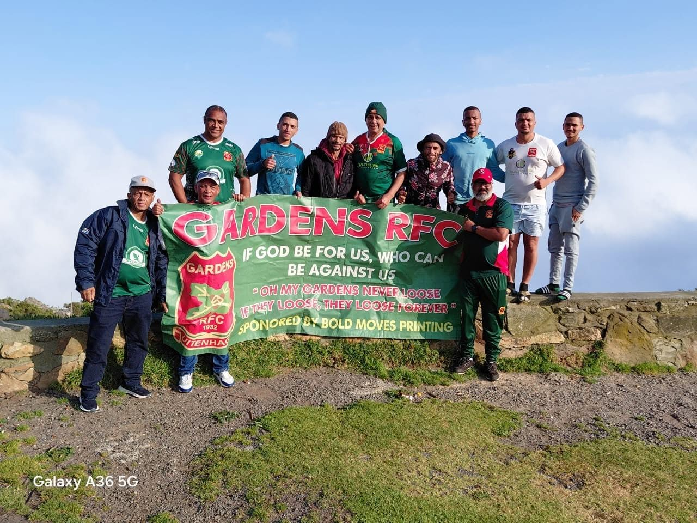
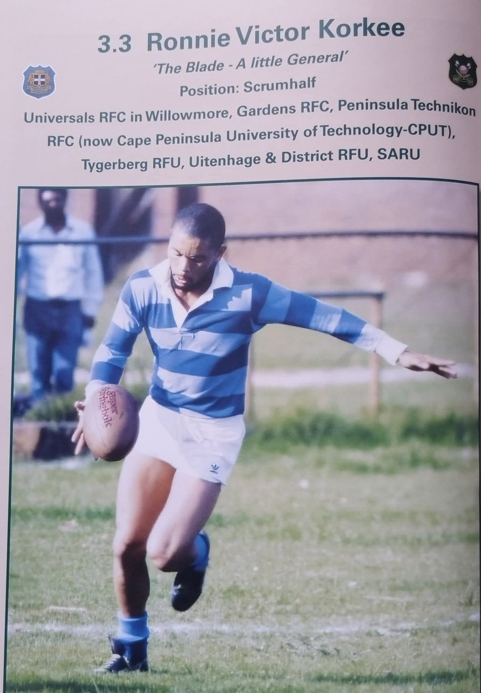
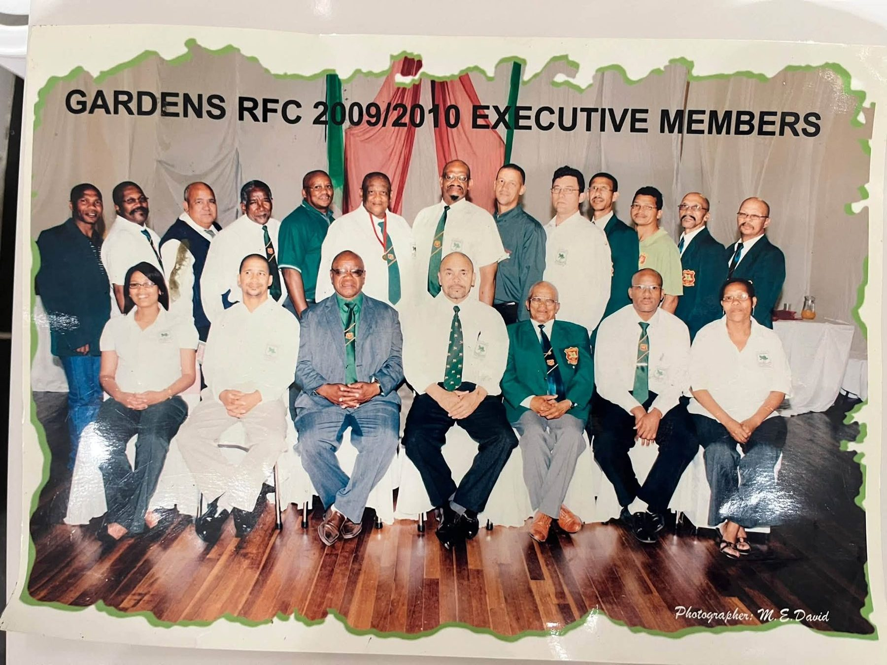

The name
Uitenhage is known as the Garden Town. The founders named the club after the character of the place.
Gardens RFC since 1932
Ninety-four years of green, white and red: where the club came from, what it stands for and the people who run it.
In 1932 a small group of men set out to build a club that would foster rugby for generations. They held to two principles: discipline and respect.
Money was short. The first jerseys were long-sleeved vests, dyed green by hand. The club entered Eastern Province with a second team, played one match, and was promoted to the first division. It has never looked back.
Four years later, in 1936, Gardens won the Kippler's Shield under the leadership of Larry Ferreira. Our first president was Oom Basie Daniels.
Uitenhage is known as the Garden Town. The founders named the club after the character of the place.
Green, white and red together look like a flower, which is why the jersey blooms in all three.
The leaf on our crest honours the oaks that once lined the streets of the town.

If God be for us, who can be against us.
Romans 8:31, the verse the Gardens family holds to
To create an atmosphere where players can easily tap in and become part of the team culture and club values.
Through effective and efficient coaching and mentoring, to produce players who can reach the top of their playing career and become independent, productive citizens of our country.
Every part of the badge on the jersey tells part of the Gardens story. Tap a number, or let the crest show you round.
The flag flying at the top of this page carries the crest in full, in the club's own colours.
Gardens is the only club in Eastern Province rugby history that had to play through five different divisions to reach Super League status. This is how the club did it.
Affiliated to Eastern Province, with "Oom Basie" Daniels as first president.
The first major trophy, won under Larry Ferreira.
Every major trophy won, including the Kippler Shield, Willie Wong, McKarsan and Jubilee. From the late 1930s to the early 1990s the club took trophies for 15 consecutive years. Two players earned national colours, and for five years the Uitenhage and District side was made up of 14 Gardens players. We also competed in the SARU Top 8 Club Competition.
Unification tore the club apart. Gardens fought back through the zones, Town League, City League and the Adams Cup, and was promoted to the Super League in 2000.
A major result in the Super 12, which brought together the top four clubs of Eastern Province with Border and SWD.
A top result in 2014, then finalists in 2015, 2016 and 2017, against the top six clubs of Eastern Province and Border.
Champions twice. Mayoral Cup winners for two consecutive years.
Gardens reached the last eight nationally.
Photographs from the club's own albums: trophy nights, old team sheets and the players who made the crest mean something.

The members elected at the AGM to run Gardens RFC: the club's finances, fixtures, membership and its place in Eastern Province rugby.
